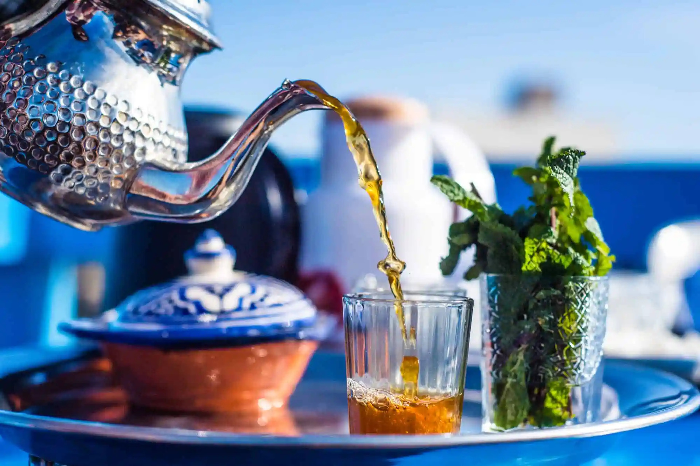
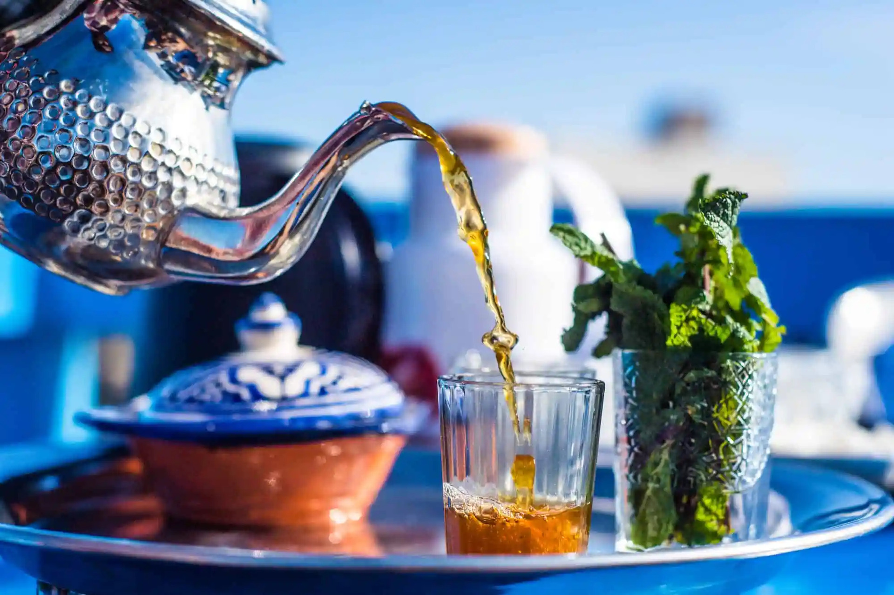

Why Learn Darija?
Darija, the Moroccan dialect of Arabic, opens the door to a vibrant culture, deep connections, and a unique way of expressing yourself. It's the everyday language spoken by over 30 million Moroccans, blending Classical Arabic with influences from Amazigh (Berber), French, and Spanish. Whether you plan to travel, reconnect with roots, or simply love languages, Darija is your gateway to the real Morocco. Unlike Modern Standard Arabic, Darija is the language you'll hear in Moroccan homes, streets, markets, and media - making it essential for authentic communication with locals.
What We Offer
- Private 1 on 1 Darija lessons for all levels
- Daily interactive quizzes on TikTok
- French-Darija & Spanish-Darija versions
Follow Us on TikTok
Join our growing communities:
Latest Quizzes
A daily dose of quizzes to learn how to write and pronounce everyday words.

Discover Morocco
 
